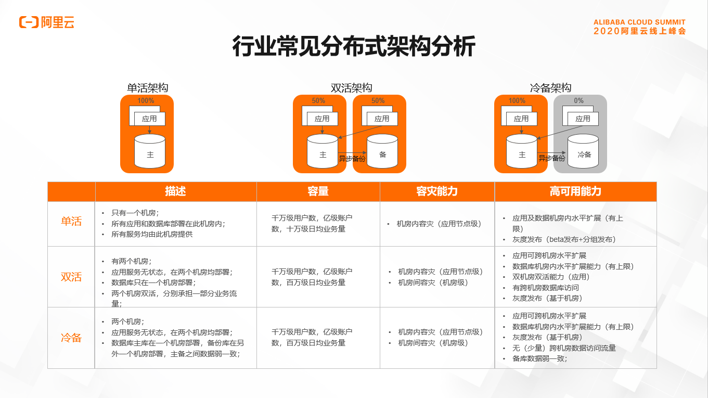
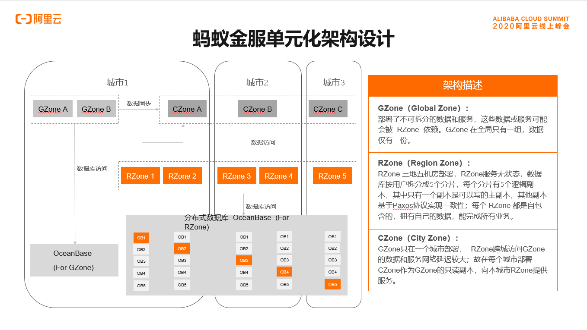
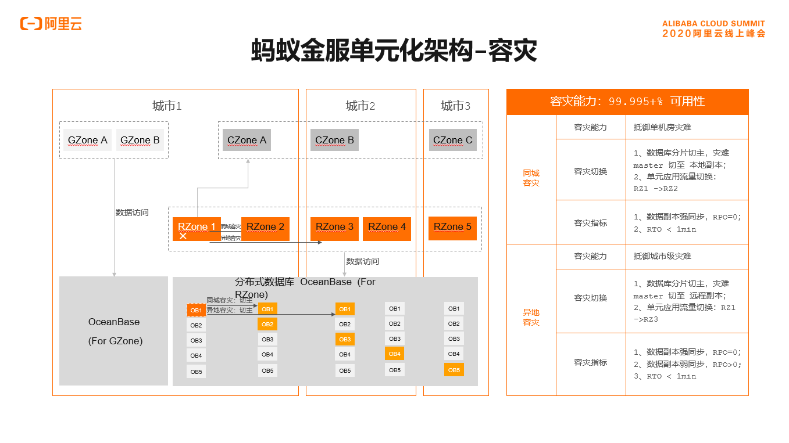
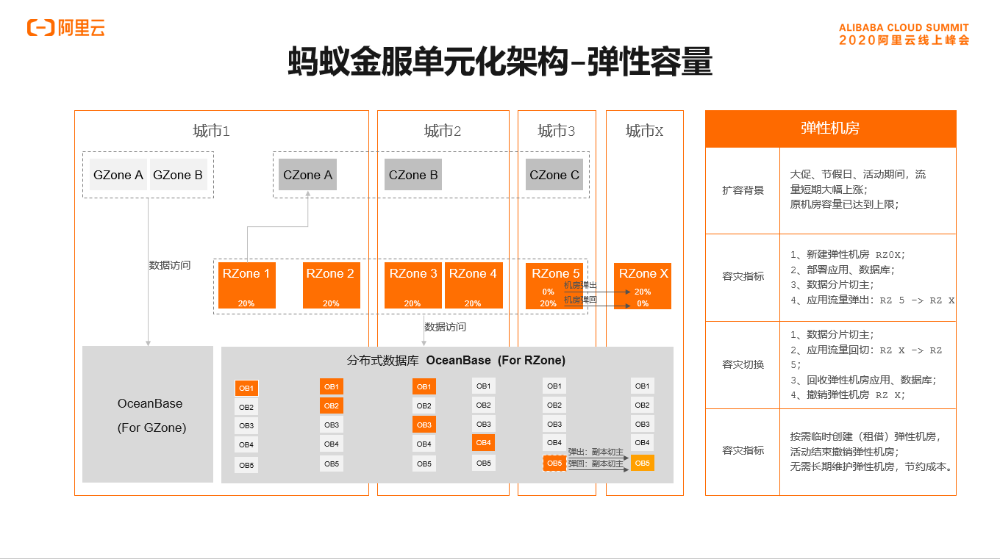
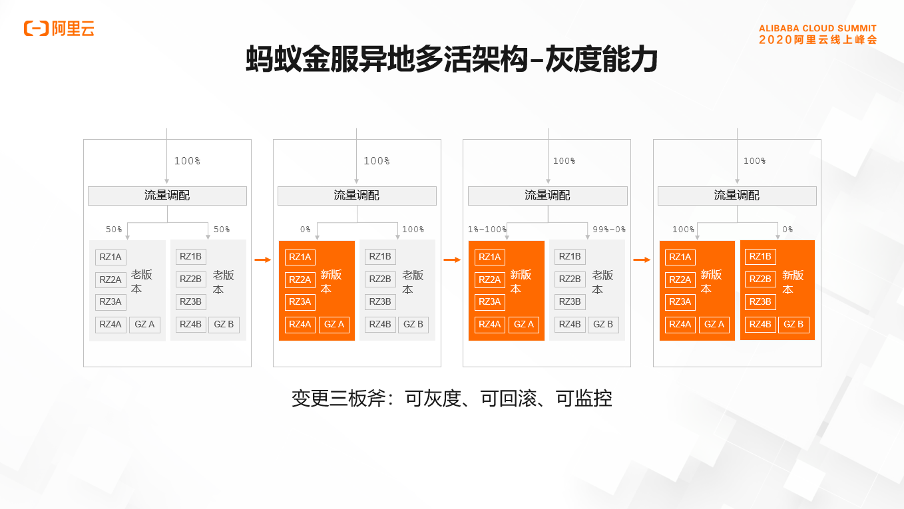
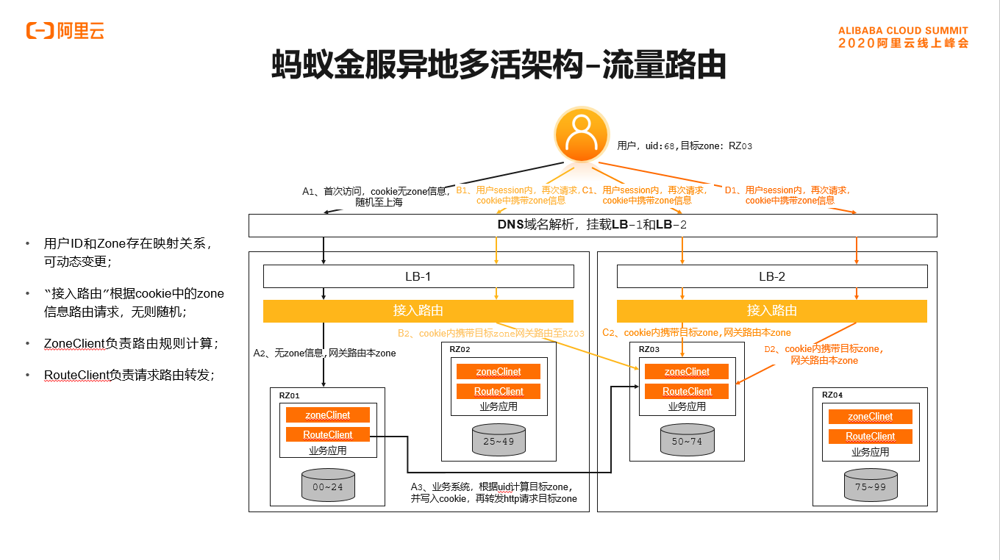
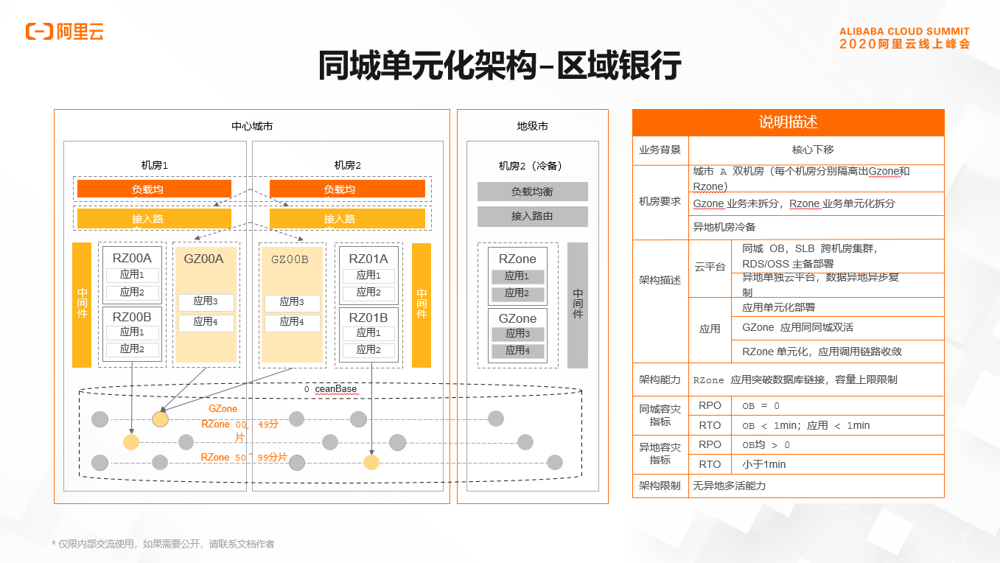
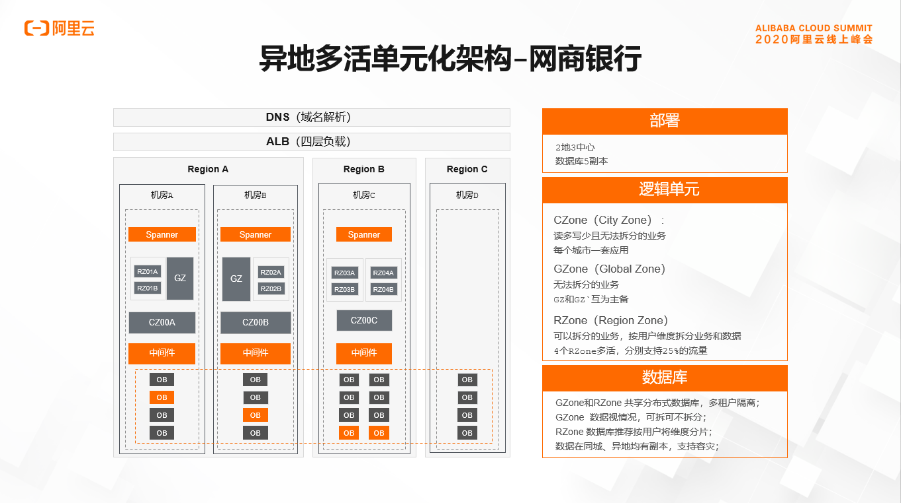

单元化益处
- 无限可伸缩微服务架构：通过中间件和 PaaS 平台的配合，能够通过快速搭建一个业务完整的逻辑部署单元对系统进行整体扩容，对新机房扩容等操作带来了非常大的便利。突破接入层、应用层和数据层的瓶颈，可支持无限扩展。
- 异地多活部署：除了具备异地容灾能力以外，还能做到异地多城市多活，可随时在多个城市间调配流量比例，在提升容灾能力的同时，降低了成本。
- 全站蓝绿发布和线上灰度仿真：通过多单元之间灵活的流量调配机制，可以实现大规模集群的蓝绿发布，极大的提升了发布效率。同时，通过单元内自包含的服务发现/路由和数据层的单元化分片，保证故障被切割的更小且具备独立性，不会传播到其他机房，从而实现发布时的故障自包含，蚂蚁基于这个机制实现了线上全链路压测和灰度仿真环境，为业务提供了更真实的验证环境，这对充分验证业务正确性，降低技术故障起到了关键的作用，尤其对金融类业务。
- 异构机房上的弹性混合云架构：通过单元化伸缩的机制和容器化技术对底层虚拟化平台的屏蔽，实现多个异构机房的资源充分利用，无论基于什么架构，无论在哪个城市，都可以快速建站部署单元，并在业务高峰期过后快速回收，完成数据的回迁。
支付宝单元化演进
行业常见分布式架构
行业常见的分布式架构主要包含，单活架构、双活架构和冷备架构。从容灾能力角度来看，双活架构和冷备架构均能做到应用级跨机房容灾，但是数据库因为使用了异步复制的技术，无法做到机房级RPO=0的容灾。再看灰度发布的能力，冷备架构和双活架构都只能做到机房级灰度发布，无法做到更细粒度的灰度发布。

蚂蚁单元化架构介绍
在介绍完行业常见的分布式架构后，我们来看一下蚂蚁的分布式架构发展历程，和单元化架构的详细介绍。
这是蚂蚁分布式架构发展历程。蚂蚁也经历了单活、同城双活、两地三中心，三个阶段。其中两地三中心是同城双活加一个冷备。随着蚂蚁业务和业务量复杂度的越来越高，业务对于基础架构的要求也越来越高，即扩展能力、容灾能力、灰度能力要求越来越高。最终蚂蚁发展到了单元化架构，将主要业务拆分单元即分片，装入不同的逻辑单元内，每个分片的数据库实现三地五中心部署即三地五中心的单元化架构。
首先我们来看一下蚂蚁单元化架构的整体架构设计，整体架构包含RZone、GZone和CZone。其中GZone部署的是无法拆分的数据和业务，GZone的数据和业务被RZone依赖，GZone全局只部署一份，而RZone部署的是可拆分的业务和对应的数据。每个RZone内的数据分片如图所示有五副本，实现三地五中心部署，每个分片内只有一个可写入的主副本，其余副本按照Paxos协议做数据强一致。每个RZone内实现业务单元封闭，独立完成自己的所有业务。而CZone的出现是因为GZone全局只有一份，不同城市的RZone可能依赖GZone服务和数据的时候需要远距离调用，延迟比较大，所以在每个城市部署一个CZone作为GZone的只读副本，为本城市的RZone提供服务。

介绍完单元化架构的整体设计之后，我们从容灾、灰度发布、弹性三个方面详细看一下该架构的能力。
首先看容灾能力，容灾能力分为同城容灾和异地容灾，以图中所示为例，RZone1出现故障先看同城容灾能力，我们目标将RZone1切换至同城容灾RZone2。先做数据库分片切换，RZone1对应的分片为分片1，把分片1在RZone2的副本提升为主副本，数据库副本提升完毕后将RZone1的流量切换至RZone2，实现同城容灾RPO=0、RTO<1min。
再看异地容灾，同样以RZone1故障为例。目标切换至RZone3，先做数据库切换，分片1在RZone3的副本切换成主副本，完成后将RZone1的流量切换至RZone3，实现异地容灾，该过程RPO=0、RTO<1min。

接下来我们看弹性。弹性的背景是业务在大促、节假日等流量出现大幅上涨的过程，我们可以短期租借新的城市和新的IDC。如图所示，我们租借城市X的IDCX作为RZoneX，将RZone5的部分流量弹出至RZoneX，对应流量的数据也弹出至RZoneX内。在节假日大促结束之后，将RZoneX内的流量和数据弹回至RZone5，然后回收RzoneX，这样大幅节约了机房成本。

介绍完弹性之后，我们来看灰度能力。如图所示，我们将四个RZone（RZone1、RZone2、RZone3、RZone4）的业务和应用分为A、B组，日常A组和B组各承担50%的应用流量。在应用新版本发布时，我们将A组的流量全部切换至B组，此时在A组上部署新版本，部署完毕后将B组的流量按粒度切换至A组上，切换粒度等于数据分片的粒度。在切换的过程中可以做A组和B组的服务对比，如果发现A组的服务异常，可以快速将流量切换回B组。在A组服务一段时间后无异常发生，最终可以将B组的流量全部切换至A组，把B组的版本更新为新的版本，在整个切换的过程中实现了可灰度、可回滚、可监控。

我们再深入到架构内部，来阐释一下架构内关键模块是如何支撑该架构的。
首先我们看流量路由模块。流量路由模块的核心是将用户的uid信息和对应的Zone信息植入到cookie中，供流量路由模块做精准路由。我们以用户uid=68、RZone=RZ03为例来看流量路由模块是如何工作的，首次用户接入时cookie内无zone信息，流量接入模块会随即将该请求发到一个RZone内，如发到RZone1内，RZone1通过zoneClinet会准确计算该请求应发至RZone3，即通过RouteClinet将该请求发送。发送过程中将计算出的uid信息和对应的zone信息植入cookie内转发至RZone3，RZone3完成本次业务请求后将结果返回给用户，其后用户同意session内的其它请求，因为在cookie内已经有了准确的路由信息，会被流量路由模块准确的发至RZone3完成业务请求。

接着我们再看一下服务路由，服务路由分为本机房服务路由和跨机房服务路由调用。先看本机房服务路由，服务调用端向本机房服务注册中心订阅服务，发现服务地址后做本机房服务路由调用。再看跨机房服务路由调用，服务调用端向其他IDC的注册中心订阅服务地址，发现服务地址后做跨机房服务调用。
最后我们看数据是如何实现高可靠的。蚂蚁使用自研的分布式关系数据库OceanBase，每个分片的数据库做5副本部署，部署地域实现三地五中心部署，5副本中有3副本实现强一致，如图所示可以实现同城、IDC容灾和异地容灾。

单元化架构实践场景
介绍完蚂蚁单元化架构的主要概念即关键模块信息之后，我们看一下单元化架构一些其它案例。
同城单元化。即将这家区域银行的主要业务拆分成两个逻辑业务单元两个分片，将其装入一个城市的两个IDC内，在另外一个城市建设冷备，其数据库每个分片实现5副本部署，其中4副本在主城市两个中心内部署，1副本部署在了本机房内。该架构实现了同城容灾能力，同时也实现了细粒度的灰度能力和弹性能力，但同样无法实现异地容灾能力。

最后我们看一下蚂蚁网商银行的案例。网商银行实现了异地多活单元化完整的架构，网商银行的主要业务拆分成了4个分片，装入4个RZone内，这4个RZone分别部署在了两个城市内，各承担25%的流量，而数据库实现5副本三个城市部署。其中提供服务的两个地域两个城市部署4副本，远端部署1副本。该架构实现了同城容灾、异地容灾，同时也实现更细粒度的灰度能力和弹性伸缩能力。

介绍完案例后，我们看到了单元化架构的一个灵活性，既可以大GZone部署，也可以同城单元化部署和异地多活单元化部署。